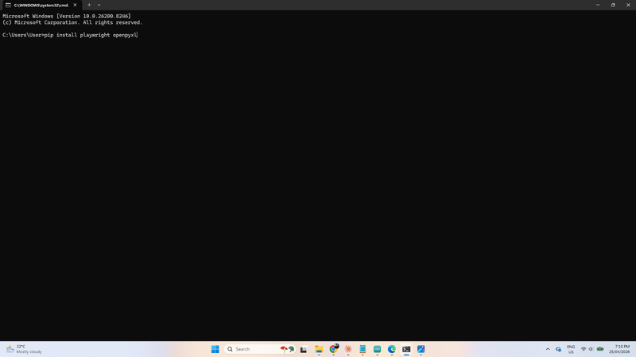
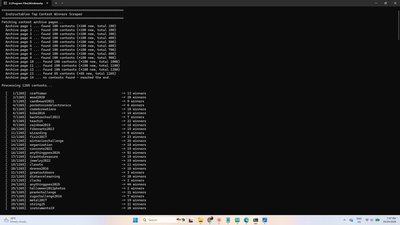

Even wondered who the top 50 prizes winners are on Instructables?
To be honest, I was curious as to where I sit amongst the competition winners and it turns out that I'm in the top 5 (1 off equal top 3!!).
I joined Instructables way back in 2011 and published my first 'Ible in Jan 2012. The project got some views and likes and after that I was hooked.
I've pubished 254 255 'Ibles since then and it's been a great journey. I've learnt a tonne of skills and have published a broad range of builds over the years.
A huge thank you to anyone and everyone who has voted for one of my projects thought the years. You are all superstars xx
Also thanks to the Great Instructables team!
Back to the question I first asked.
As the internet wasn't helping me and I couldn't find anything relevant, I decided to build a tool that would extract the information from all of the competitions run by Intructables!
After a few hours coding, I ended up with a Python script that runs a program and outputs a list of the top 50 winners and some stats about each one.
The results can be found in Step 1. - Visit the website that I created to check out the winners
In the Supplies step I have provided everything you need to run the script yourself. I looked up the top 50 but you can also change the amount of competition winners to look up as many as you want!



RUN THE PYTHON SCRIPT YOURSELF
It's super easy to run the python script yourself if you want to. Just follow the instructions below and run it on your computer.
Go to the next step to see the results
Install Python
https://www.python.org/downloads/
Download the script
Open Command Prompt
Install required packages (one time only)
Run the script
Find your output files

Check out the link to see the winners
https://lonesoulsurfer.github.io/Instructables_Contest_Winners/
The results can also be found on GitHub.
You can download 3 different file formats of the list from my GitHub page.
There is an Excel, HMTL and CSV files available.
These are the outputs you get after the Python script has ran.
The results don't just supply a list of the highest competition winners. It also provides the following:
If you want a longer list of competition winners, then check out the next step.


You can change the number of winners that the script outputs. It is very simple and can provide a list of a 1000 winners (or more) if you want that many.
STEPS: